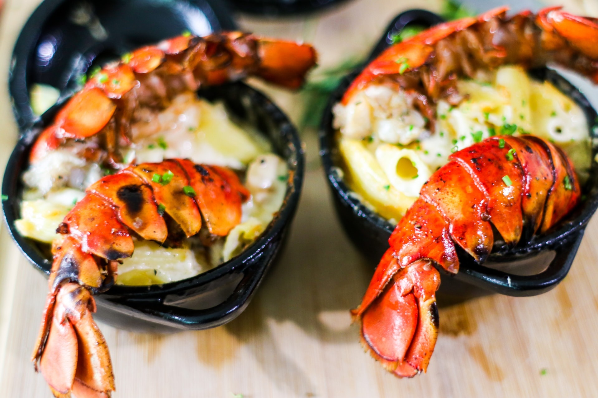

Lagosta.

- 1 kg de lagostim.
- 2 tomates.
- 5 dentes de alho.
- sal e pimenta a gosto.
- suco de 3 limões.
- 1 colher de manteiga.
- 1 colher de azeite
- leite de coco
- 1 colher de molho de tomate
Modo de preparo
-
Primeiro limpe o lagostim, tirando as barbatanas.
-
Banhe com o suco de 2 limões.
-
Coloque água na panela até cobrir o lagostim e cozinhar por 10 minutos.
-
Depois de cozidos retire as cascas.
-
Depois de fervidos e descascados coloque em uma vasilha e acrescente o alho picado, suco de 1
limão, sal, pimenta e deixe descansar por 5 minutos.Coloque
a manteiga e o azeite numa panela (grossa), acrescente os lagostim e deixe dourar um pouco.
-
Acrescente o tomate, refogue o leite de coco e o molho de tomate.
-
Deixe ferver e está pronto.
Clebridade com quem dividiria esse prato.